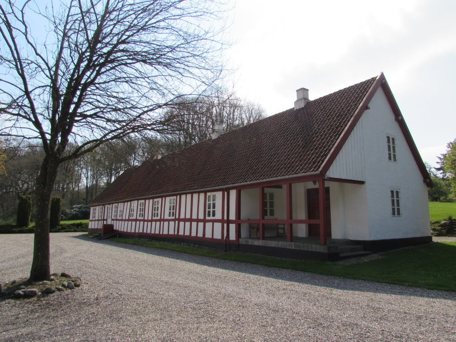
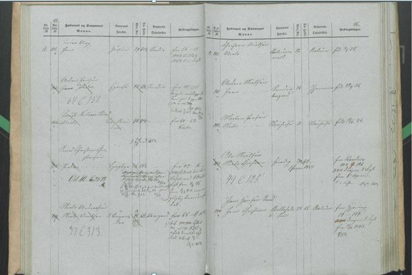
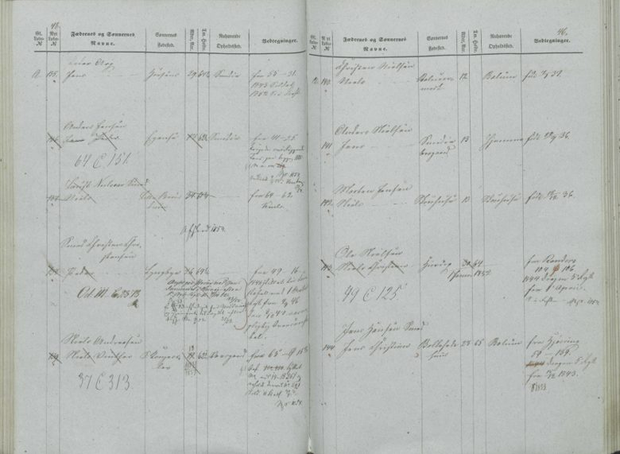
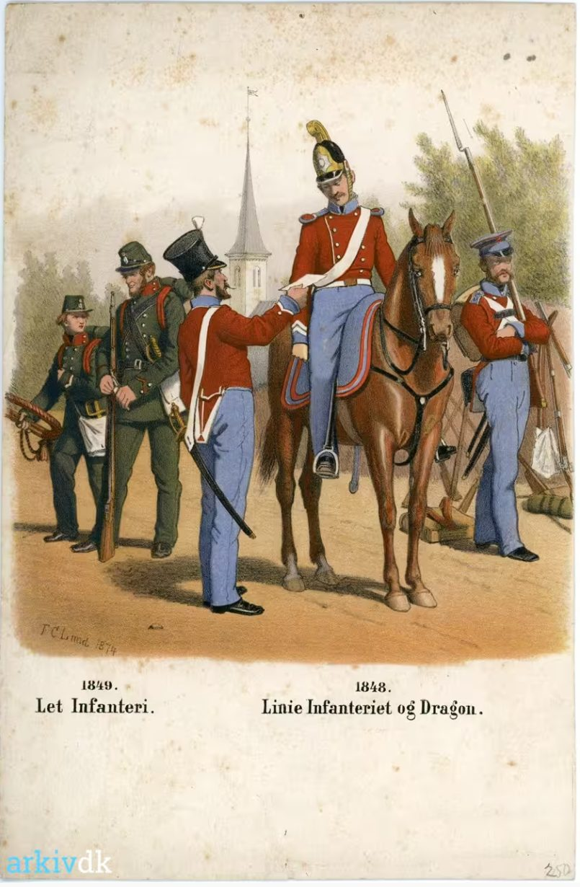
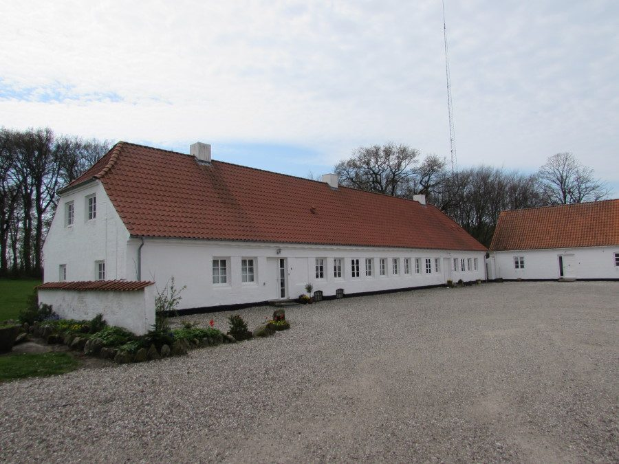

Chapter 2
Farmhand and dragoon
1835–1853
The times: conscription and the end of absolutism. Until 1849 every rural boy was entered at birth in the lægdsrulle, the conscription roll, and was called up for selection at about 20.1 Then the political world turned over. The June Constitution, signed by King Frederik VII on 5 June 1849, ended absolute monarchy and made military service the duty of every able-bodied man.2 In March 1848 the duchies of Schleswig and Holstein had risen in revolt, backed by Prussia. The First Schleswig War that followed was fought mainly in 1848–50, with Danish victories at Fredericia on 6 July 1849 and at Isted on 24–25 July 1850. The London Protocol of 1852 kept the duchies under the Danish king, for the time being.3
A farmhand's life. A young farmhand, a karl, was hired for a year at a time and could change masters only on fixed moving days, later set at 1 May and 1 November. From 1833 every servant had to carry a skudsmålsbog, a sewn and sealed service book recording his birth, parents, schooling and confirmation, with each master's entries on his service. Without it he could not be hired elsewhere. Cash wages were small, and part of his pay came as clothing and shoes. Servants ate with the farmer's family, three times a day from the common porridge bowl, and worked from before dawn until evening.4
Few records survive of where he lived or worked between his confirmation in 1835 and his enlistment in 1844, but two entries in the moving-out lists (afgangslister) of Bælum parish very probably concern him.
-
In November 1841 the list enters "Niels Christian Olesen, 20 Aar", leaving Lillebrøndum for "Viiborg". This is usually read as the town of Viborg, about 60 km to the south-west, but no other record shows him there, so the destination is uncertain.
-
In November 1842 it enters "Niels Christian Olesen, 21 Aar, fra L. Br. til Terndrup": from Lillebrøndum to Terndrup. The ages fit him exactly, since he turned 20 on 1 June 1841, and Terndrup is the village where he married in 1854.
If both entries are his, he left Lillebrøndum in November 1841, was back there within a year, and was living in Terndrup twelve years before his marriage.
A third entry, in Bælum's arrivals list (tilgangsliste) for 1847, brings "Niels Christian Olesen", 26½, a farm servant, back to Lillebrøndum from Dalsgaard in November 1847, when he was 26 and five months. The entry does not name Dalsgaard's parish; it was presumably the manor (hovedgård) of that name in Vive parish, which in the 1850 census was run by a tenant (forpagter) with nine servants. That was during his years as a dragoon, and Bælum is where the levying roll of 1851–52 finds him.
None of the three entries gives a birthplace, so a second man of the same name cannot yet be ruled out.5 See Appendix C.


A Dragoon at Randers
In 1844, at 23, he entered the cavalry and served as a dragoon at Randers until 1851.6 The army order of 1842 had reorganised the Danish cavalry into six numbered dragoon regiments of four squadrons each.7 A page of the levying roll saved in the family's research is identified there as his entry as a dragoon in 1844.8 His years of service cover the First Schleswig War of 1848–50, Denmark's war with the Schleswig-Holstein rebels and the German states behind them. The family tree records that he took part in it. In 1918 his son Anders Christian wrote to the Viborg provincial archive that a certificate from the War Ministry's archive showed his father "var med i Krigen 48–50": he had served in the war of 1848–50.3 Which engagements he fought in is not recorded. His service was tracked in the lægdsrulle, the conscription roll that followed every rural man of military age. The 1851–52 roll shows him living in Bælum.9


His Entry in the Levying Roll
A second page of the roll is much clearer. Entry no. 143 names the father, Ole Nielsen, and the son, Niels Christian. Its remarks column reads "1844 Dragon 5 Regt fra 1 April": he joined the 5th Dragoon Regiment on 1 April 1844.8 The 5th Dragoons were the Randers regiment. They took that name in 1842 and stayed in the town until 1953.7 This is the first record found that names his unit. It does not give his rank. The roll files each son under his father's name, so naming Ole Nielsen here does not show that he was alive when the page was written; there is no age, residence or remark for him. Its birthplace column appears to read "Hurup", but the column for his current residence is empty.
The page probably dates from about 1849, since the boys entered just above him were born in 1836–37 and are listed as 12 and 13. The words "fra Randers" with a page and entry number probably mean his entry was carried over from a Randers roll. The figure 64 is probably his height in Danish inches, about 167 cm. The margin note "49 C 125" is probably a cross-reference to another roll of 1849. A later line ending "1854" probably records his discharge or removal from the roll.




In April 1853 he moved from Ny Wiffertsholm, a manor (hovedgård) in Solbjerg parish next to Bælum, to Terndrup in Lyngby Sogn, where he met the woman he would marry. Both ends of the move are recorded. The moving-out list enters "Niels Christian Olesen", 33, a farm servant, leaving Ny Wiffertsholm for Terndrup on 1 April 1853, and Lyngby's arrivals list (tilgangsliste) enters him, aged 32 and in service, arriving from Ny Wiffertsholm in April 1853 with his service book (skudsmaalsbog), issued by Pastor Langhorn on 1 April, which recorded that he had been vaccinated.10


Click here for notesHide notes10 notes
Abbreviation: DFT = Damborg family tree, "20130316 Damborg", Ancestry.com Member Trees, GEDCOM export of 26 May 2026, including its facts, research notes and attached images. Short titles refer to the Works Cited.
- 1FamilySearch Research Wiki, “Danish Military Levying Rolls: When was a person registered in the Lægdsruller” and “Who was recorded in the Lægdsruller” (rural boys entered at birth until 1849; selection at about age 20). ↩
- 2“Constitution of Denmark,” Wikipedia (signed by Frederik VII on 5 June 1849; ended absolute monarchy; duty of every healthy man to military service). ↩
- 3“First Schleswig War,” Wikipedia (war of 1848–1852 with fighting mainly 1848–50; Battle of Fredericia, 6 July 1849; Battle of Isted, 24–25 July 1850; London Protocol, 8 May 1852); Anders Chr. N. Damborg to Landsarkivet i Viborg, 29 January 1918, Viborg Landsarkiv journal 1918 no. 138, with the archivist's notes; image supplied by the family. ↩a ↩b
- 4Festbogen, “Skiftedag” (yearly hiring; moving days, finally 1 May and 1 November); Lex.dk, “Skudsmålsbog” (compulsory for servants from 1833; birth, parents, baptism, schooling, confirmation and employers' entries; sewn and sealed); Gyldendal og Politikens Danmarkshistorie, “Klasseskel på landet” (servants ate three times a day from the common porridge bowl; little cash, clothing and shoes as part of pay); Arbejdermuseet, “Børnearbejde på landet” (14–16-hour working days). ↩
- 5Bælum Sogn, church book 1813–1843, moving-out lists (afgangslister) 1841, no. 25, p. 240, and 1842, no. 41, p. 301; FamilySearch DGS film 007470684, item 2, images 118 and 146. Neither entry is dated itself; the clerk wrote the date only when it changed. In 1841 the last date above his entry is "1ste Novbr." at no. 15, and in 1842 "1 Novbr." at no. 30, so both moves fall in November, most likely on the 1 November moving day. FamilySearch indexes the 1842 entry as a death, because the clerk wrote the list on a page printed for male deaths. Bælum Sogn, church book 1843–1876, arrivals list (tilgangsliste) 1847, no. 48; FamilySearch DGS film 007470605, item 2, image 38. On Dalsgaard: Danske Herregårde, "Dalsgaard" (census households 1787–1860, from Dansk Demografisk Database; a hovedgård in Vive Sogn, run in 1850 by a tenant with nine servants). ↩
- 6DFT, Niels Christian Olesen: military service 1844–1851, Randers, and note (“NCO was a Cavalry man in Randers and partipate in the war with Germany”). ↩
- 7Wolter, "Livgardeeskadronen 1848" ("with the army order of 1842 the cavalry's cuirassier and dragoon regiments were abolished and replaced by six numbered dragoon regiments of four squadrons each"). On the 5th Dragoon Regiment: Wadschier, "5. Dragonregiment" (named 5. Dragonregiment in 1842, formerly Jyske Regiment lette Dragoner); Linksbuketten, "5. Dragonregiment – Randers" (garrisoned in Randers until the move to Holstebro in 1953). ↩a ↩b
- 8Levying roll page, Rigsarkivet, Arkivalier Online, bid 1116390, labelled "NCO Dragon 1844" in the family's research (image supplied by the family). The entry itself is hard to read in the copy available. A second, clearer roll page (entry no. 143, c. 1849) was supplied by the family on 29 September 2026; its archive reference is still to be recorded. ↩a ↩b
- 9DFT, Niels Christian Olesen: image “1852 NCOD Lægsrulle”, and residence fact 1853 with note citing the 1851 lægdsrulle. ↩
- 10Moving-out list 1853, no. 4 (Ny Wiffertsholm to Terndrup, 1 April 1853), FamilySearch DGS film 004034353, item 1, image 200; Lyngby Sogn, church book 1851–1864, arrivals 1853, no. 1, p. 94, FamilySearch DGS film 007471320, item 4, image 77. On Ny Wiffertsholm: Danske Herregårde, "Ny Viffertsholm" (census households 1787–1860; "Ny Viffertsholm", Soelberg Sogn, 1850). DFT, Niels Christian Olesen: residence 1853, Lyngby Sogn, with note (moves from Bælum to Lyngby, works as a farmhand, then moves to Terndrup). ↩